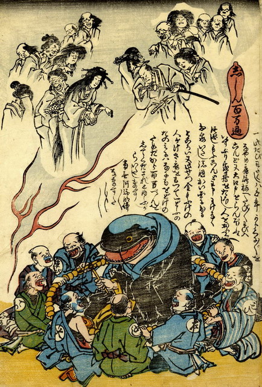

鯰が手に撥を持ち、鉦を打ちながら、念仏を唱えている。青い襟巻に、黒い法衣をまとい座っている。鯰のまわりを大工や左官など職人たちが取り囲み、大数珠をまわしながら、一緒に念仏を唱えている。
出典：親書誌：U426_nichibunken_0165：志しん百万遍；ジシンヒャクマンベン／日付：2010／資源識別子：U426_nichibunken_0165_0001_0000
Copyright (c)2010- International Research Center for Japanese Studies, Kyoto, Japan. All rights reserved.